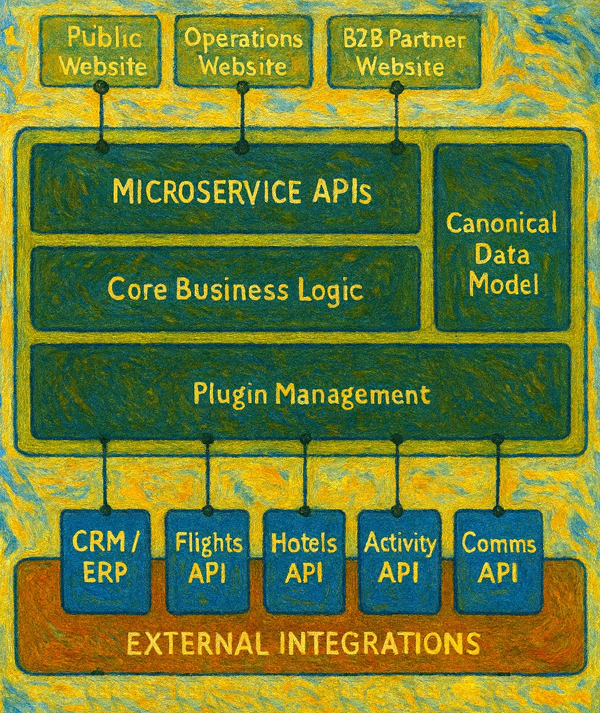

Integration
Use various building blocks, tools and APIs to create a meaningful unit that will fullfill the goal and serve the original purpose.
Three decades of helping enterprises reach their digital potential.
This image is AI-generated. It represents a blend of disciplines and passions – from engineering to research and academics, travel, art and music.
A tool is only as good as the problem it solves.
Art is the only field where we create for the sake of creation itself;
everything else is there to solve a problem or add a value.
Use various building blocks, tools and APIs to create a meaningful unit that will fullfill the goal and serve the original purpose.
Avoid repetitive tasks, assist with required actions, and implement zero-touch workflows. Optimize, yet prioritize quality over quantity.
Introduce new, faster and better ways of achieving the necessary tasks. Empower the users and humanize the digital experience.
TripQlub
I have developed this project with the primary purpose to support a travel agency business operations. I chose this subject for two main reasons: it is far removed from the telco industry (to avoid any conflict with my job), and my wife started working in the travel industry and then running her own travel agency. The development was distributed over several years, and it has been a challenge from multiple perspectives, such as:
With that in mind, some design principles were adopted to cater for the initial shortcomings:
Modularity and extensibility
Knowing that new requirements will be frequent, the architecture should allow for maximum extensibility and capability to add new functionality without breaking the existing features. For adding new features and integrations, a plug-in approach is preferred.
Very thin front-end layer
Most frequent changes happen in the user-facing and customer-facing front end layer. It should be easily modifiable and devoid of any business logic; but the entire UI has to be in one place (no UI elements generated in the backend).
Microservice API backend
Complete interaction between frontend and backend should be API based. There should be a balance of the service granularity to provide fine-grained and atomic operations yet optimize the traffic between layers.
Data abstraction and unification
Integration of many different 3rd party systems means a lot of incompatible data. A Common data dictionary with an abstraction layer and configurable transformation rules must be in place.
High level of automation
For a small company without many employees, it is crucial that no time is wasted on manual tasks. The level of automation needs to be high enough to allow for quick work, but human input and approval is mandatory
SaaS-based and resource-aware
The system must be SaaS based to allow easy client onboarding. At the same time, it needs to be light on resources to reduce the cloud spending and be suitable for both small businesses and large companies.
System architecture
Following those design rules, the basic architecture of the system looks something like this:

So what?
This project is here to provide a backdrop and a context for implementation of the assignments during my MsC program.
In my learning experience, any coding (or other) assignment, except the most basic ones, are meaningless without a real-world context.
Setting the assignment in a way that it will provide a useful contribution to a real problem is the best
way to illustrate and apply the knowledge behind that assignment.
Considering that, I will attempt to implement the assignments by applying their solution, as much as possible, in the
frame of the travel operations project, and to showcase the assignment in the context of a realistic implementation.
So this is a real project?
Yes, this is a real production project. You can visit the production website where you can browse destinations, buy attraction tickets, book flights and hotels. And if you like it, and want/need more details, you can contact me and I will be happy to answer any questions.